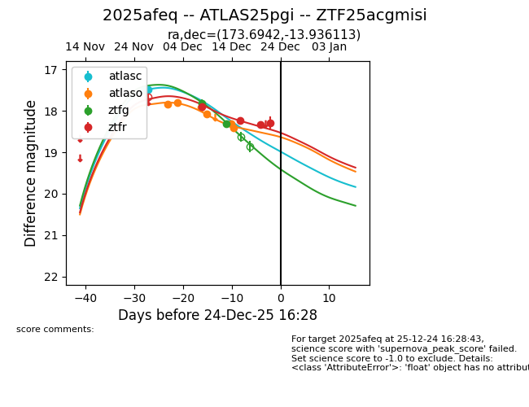
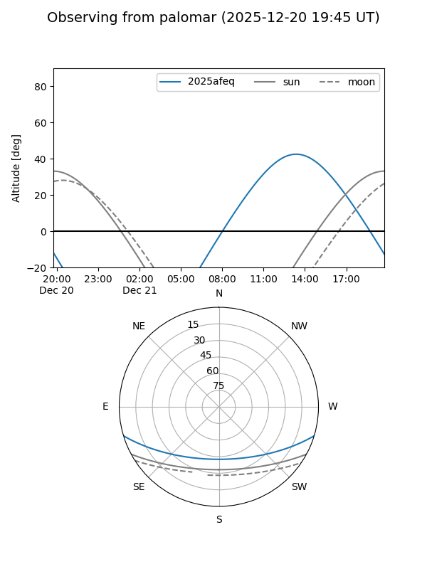
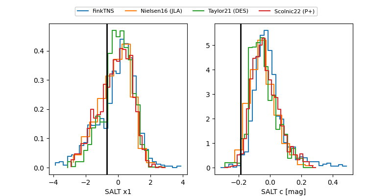

2025afeq
Target 2025afeq at 2025-12-31 17:00
Aliases and brokers:
FINK:
Lasair:
ALeRCE:
TNS:
YSE:
alt names
ZTF25acgmisi (ztf,fink_ztf)
2025afeq (tns,yse)
ATLAS25pgi (atlas)
Coordinates:
equatorial (ra, dec) = 173.6942,-13.93611
equatorial (HMS+DMS) = 11:34:46.61,-13:56:10.01
galactic (l, b) = (276.1901,+44.91823)
Flags:
Photometry:
last atlasc=17.48, atlaso=18.40, ztfg=18.32, ztfr=18.61
2 atlasc, 6 atlaso, 2 ztfg, 5 ztfr detections
Lightcurve

Visibility


Additional plots
